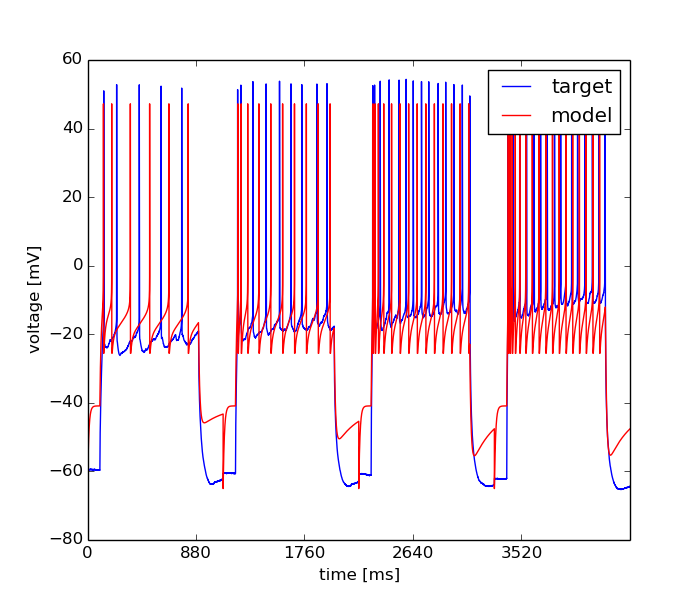

Fri Mar 7 16:48:31 2014
Optimization of int&fire.hoc based on: /home/pfriedrich/Desktop/tests/adexpif_ca3_pc_exp/ca3_sort.txt.csv
Results
| Parameter Name | Minimum | Maximum | Optimum |
|---|---|---|---|
| vthres | -40.0 | -10.0 | -13.6103770298 |
| vreset | -40.0 | -10.0 | -25.5522280003 |
| trefrac | 1.0 | 10.0 | 3.59777147049 |
| a | -0.015 | 0.0 | -0.000138759712352 |
| b | 0.0 | 0.1 | 0.0573594657295 |
| delta | 1.0 | 10.0 | 2.78766868257 |
| tauw | 100.0 | 1000.0 | 191.064706891 |
| cm | 100.0 | 150.0 | 100.010513506 |
| EL | -65.0 | -40.0 | -40.8799197448 |
| GL | 1.0 | 10.0 | 9.93362888359 |
Fitnes: 0.21006906338

Error Tolerance for x: = None
Size of Population: = 500
Accuracy: = None
Mutation Rate: = 0.25
Cooling Rate: = None
Final Temperature: = None
Std. Deviation of Gaussian: = None
Cooling Schedule: = None
boundaries = [[-40.0, -40.0, 1.0, -0.014999999999999999, 0.0, 1.0, 100.0, 100.0, -65.0, 1.0], [-10.0, -10.0, 10.0, 0.0, 0.10000000000000001, 10.0, 1000.0, 150.0, -40.0, 10.0]]
Number of Generations: = 100
evo_strat = Classical EO
seed = 1234.0
Initial Temperature: = None
starting_points = None
Dwell: = None
Mean of Gaussian: = None
Error Tolerance for f: = None
num_inputs = 10
feats = Spike Count, Averaged Squared Error II, Latency to 1st Spike, ISI Differences
weights = [0.25, 0.25, 0.25, 0.25]
user function =
def usr_fun(self,v):
#10
#vthres
#vreset
#trefrac
#a
#b
#delta
#tauw
#cm
#EL
#GL
h.cas()(0.5).point_processes()[1].vthresh=v[0]
h.cas()(0.5).point_processes()[1].vreset=v[1]
h.cas()(0.5).point_processes()[1].trefrac=v[2]
h.cas()(0.5).point_processes()[1].a=v[3]
h.cas()(0.5).point_processes()[1].b=v[4]
h.cas()(0.5).point_processes()[1].delta=v[5]
h.cas()(0.5).point_processes()[1].tauw=v[6]
h.cas()(0.5).cm=v[7]/(3.141592654*0.001784*0.001784)/1000000
h.cas()(0.5).point_processes()[1].EL=v[8]
h.cas()(0.5).point_processes()[1].GL=v[9]/1000
h.cas()(0.5).e_pas=v[8]
h.cas()(0.5).g_pas=v[9]/(3.141592654*0.001784*0.001784)/1000000000